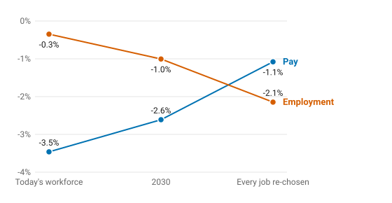
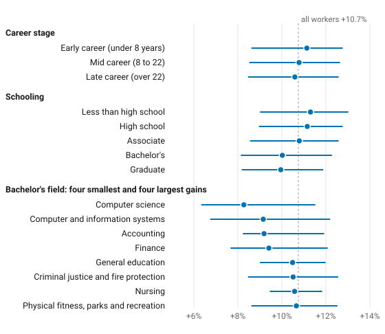
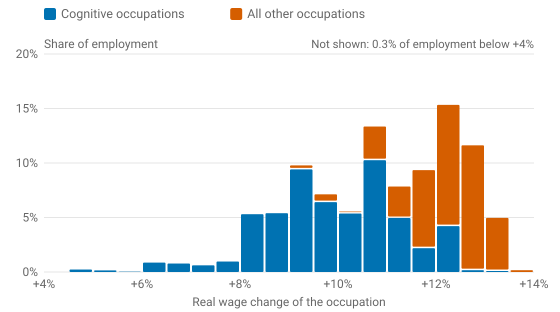
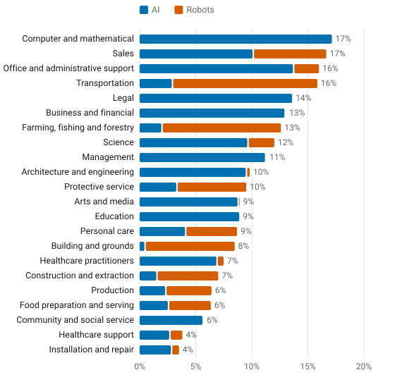
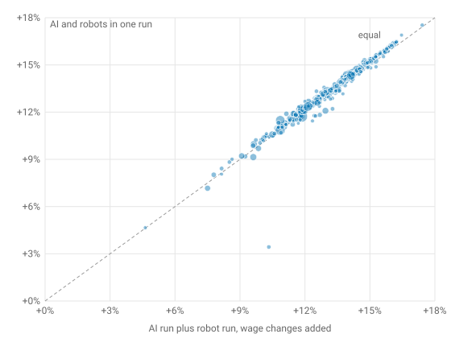

An occupation-level simulation of AI, robots and the labor market
Eric Silver · November 18, 2026 · draft
Summary · Scenarios · Workforce explorer
In a scenario where AI takes 7.7% of work time by 2030, output is 10% higher than without AI, real pay rises 9.7% in cognitive occupations and 12.1% in all others, and 0.3% of workers change occupation. The scenario is the “substantial change” case of the Anthropic Institute’s Economic Scenarios for Transformative AI, run through a model with 551 occupations and a simulated workforce that stands for 136 million workers. The numbers on this page are scenarios, not forecasts.
Why this work matters
Most published estimates of AI’s effect on work give either a score for how exposed each occupation is, or a model of the whole economy with one or two kinds of worker. People decide in between: which degree to earn, which occupation to stay in or leave, which workers a policy should reach. This simulation solves for wages, prices and employment in 551 occupations with individual simulated workers, so one scenario can be read for the economy, for an occupation, or for workers who share schooling or work history. It reports relative pay as well as real pay, which separates a scenario where pay falls from one where pay rises and a degree is worth less. Its inputs are public and can be swapped, so exposure indexes can be compared, and AI and robots combined, on the same workforce.
Go to a scenario
- The Anthropic Institute’s substantial scenarioAI takes 7.7% of work time, under the settings of their report.
- The same scenario with robotsRobots also take 40% of the task time they could do in existing workplaces: 11.1% of work time in all.
- More intense use of AITheir extreme settings: 26.6% of work time.
Look up a job or schooling
Opens the workforce explorer: who holds a job and where they could move, or what people with that schooling do and could do. Each entry links on to its scenario results.
What this adds to other explorers
Other public tools show which work AI could do, or what happens to the economy as a whole. This one solves for wages and employment in 551 occupations with individual simulated workers, so a scenario can be read for one occupation or one type of worker.
| Explorer | What it shows | Added here | Not here |
|---|---|---|---|
| Anthropic Institute, Scenario Explorer | Growth, wages, the labor share and unemployment to 2030 for two groups of occupations | 551 occupations; workers by schooling, degree field and career stage; robots alongside AI | Capital, the labor share, unemployment |
| MIT, Iceberg Index | The wage value of the skills AI can perform, for 151 million simulated workers across states | What follows exposure: wages, prices and employment adjust until labor markets clear | Geography; skills in finer detail |
| Epoch AI, GATE playground | Growth of the whole economy as investment in computing automates tasks | Who is affected within the economy | Investment in computing and its feedback to automation |
Anthropic’s Economic Index measures where AI is used; it is an input here.
The model follows simulated workers, so effects can be read for a career stage, a degree or an occupation
The workforce is 591,529 simulated careers, weighted to stand for 136 million workers in 551 occupations. A career starts at one of 304 combinations of schooling level and degree field from the American Community Survey, enters a first job typical of that schooling, and moves along the occupation-to-occupation transitions observed in résumé data. A worker’s skills are the requirements of the jobs they have held, and a worker can enter an occupation when they hold all of its important O*NET requirements and meet its license and experience rules.
Automation removes tasks from occupations and raises output per worker by the time saved. Wages, prices and workers’ occupations then adjust until all 551 labor markets clear. The solution is exact and takes a few minutes on a desktop computer, so each result below is one run that can be tabulated for any group of simulated workers.
Automation indexes are inputs that can be swapped and combined
The model needs one thing from an automation index: which tasks lose time, in which occupations. The runs here take today’s pattern from Anthropic’s observed exposure (the share of an occupation’s task time on tasks with significant work use of Claude), the ceiling from the task labels of Eloundou and coauthors, and physical tasks from Anthropic’s robot exposure ratings. Two indexes are combined by removing the tasks that either one takes. The scenarios page also runs the Eloundou labels alone and Schaal’s (2025) index.
The scenarios use the five settings of Korinek, Jones, Sacher, Cotter and McCrory
Their report defines a scenario by the share of work AI can affect, the share of those task instances where it is used, the gain per instance, the share of use that automates rather than assists, and the number of new tasks created per task automated. Here each occupation’s affected share starts at its observed exposure, 13% of work time on average, and moves toward its Eloundou exposure, 45% on average, until the economy-wide mean equals the scenario’s value. Automated time removes whole tasks, net of the share replaced by new tasks, and a removed task can take a job requirement with it. Assisted time is saved on tasks that stay in the job.
| Scenario | Work affected | Used on | Automated | New tasks per task automated | Time removed | Of which assisted |
|---|---|---|---|---|---|---|
| Modest, 2030 | 20% | 20% | 50% | 0.50 | 1.0% | 0.5% |
| Substantial, 2030 | 30% | 40% | 75% | 0.25 | 7.7% | 1.1% |
| Extreme, 2030 | 45% | 60% | 90% | 0 | 26.6% | 1.5% |
| Robots | 10% | 40% | 100% | 0 | 3.5% | 0 |
The extreme scenario’s affected share stops at the Eloundou ceiling of 45%; the report uses 50%. The robot row counts tasks a robot could do in an existing workplace. Tasks are removed whole, so the modest settings imply 1.5% of time and 1.0% is removed. A further run scales observed exposure to the 2.08% of work hours that workers reported saving in the third quarter of 2026; it removes 1.9%.
Substantial scenario, 2030: output rises 10%, and pay rises 9.7% in cognitive occupations against 12.1% in all others
| Korinek et al., two groups | This simulation | |
|---|---|---|
| Output, against no AI | +8.3% | +10.1% |
| Wage, cognitive occupations | −0.3% | +9.7% |
| Wage, all other occupations | +5.9% | +12.1% |
| Employment, cognitive occupations | −3.9% | −0.3% |
| Unemployment, cognitive workers | 2.9% to 4.5% | not in the model |
| Labor share of income | 60% to 56% | all gains go to labor |
The levels differ for a known reason. This model has no capital: AI is free and labor receives the whole gain, so its pay levels are upper bounds. The comparable quantity is the difference between the two groups, 2.4 points here against 6.2 in the report.
Employment moves less here because few workers have a better-paid occupation open to them and the model has no unemployment, so the adjustment falls on pay first. Compare an occupation at the 75th percentile of time removed (12.4%) with one at the 25th (0.7%). For today’s workforce, pay is 3.5% lower and employment 0.3% lower in the more exposed occupation. By 2030, after 3.5 years of retirements and new entrants, the gaps are 2.6% and 1.0%. Once every job has been re-chosen they are 1.1% and 2.1%.


| Scenario | Time removed | Output | Wage, cognitive | Wage, other | Median real pay | Lower real pay | Change occupation |
|---|---|---|---|---|---|---|---|
| Measured use, today | 1.9% | +2.1% | +1.8% | +2.7% | +2.3% | 1.9% | 0.1% |
| Modest | 1.0% | +1.1% | +1.1% | +1.4% | +1.4% | 0.7% | 0.0% |
| Substantial | 7.7% | +10.1% | +9.7% | +12.1% | +10.7% | 0.3% | 0.3% |
| Extreme | 26.6% | +48.1% | +46.0% | +58.3% | +53.6% | 0.0% | 0.8% |
| Robots only | 3.5% | +2.4% | +2.4% | +1.3% | +2.6% | 7.2% | 0.2% |
| Substantial with robots | 11.1% | +13.0% | +12.5% | +13.9% | +13.8% | 0.3% | 0.4% |
Lower real pay and change occupation are shares of workers. The measured-use row is solved for today’s workforce; the others are 2030. The report’s modest and extreme scenarios put the cognitive wage at +0.4% and −11.5% and the other wage at +1.1% and +33.6%. Here the difference between the two groups is 0.3 points in the modest scenario and 12 points in the extreme one.
Gains differ little by career stage and schooling, and more by occupation
In the substantial scenario, real pay in 2030 is 11.1% higher for early-career workers, 10.8% for mid-career and 10.6% for late-career. By schooling it runs from 11.3% for workers without a high school diploma to 9.9% for those with graduate degrees. Across the 28 bachelor’s fields that each hold at least 0.2% of workers it runs from 8.3% (computer science) to 10.7%. Within each of these groups the range from the 10th to the 90th percentile is typically about four points, wider than any difference between groups, because a worker’s occupation carries most of the effect.


Across occupations, weighted by employment, the real wage change is 8.2% at the 5th percentile, 11.0% at the median and 13.0% at the 95th. Cognitive occupations lose 11.4% of their work time and all others 2.5%. The 0.3% of workers who end with lower real pay all start in one occupation, where a dropped requirement opens entry and the wage falls.


Real pay rises for nearly every worker while the pay premium for a degree shrinks
The model gives each worker’s real pay and their place among all workers, and the two move differently. In the substantial scenario in 2030, real pay falls for 0.3% of workers, while 12.5% fall at least one percentile point in the pay distribution. Workers with a bachelor’s or graduate degree earn 65.5% more than workers with high school only before the scenario and 63.9% more after. For a bachelor’s degree in computer science the premium falls from 102% to 97%. In the extreme scenario no worker’s real pay falls, a third of workers lose at least one percentile point, and the degree premium falls to 59.3%.
| Scenario | Real pay falls | Place in the pay distribution falls 1+ points | Falls 5+ points | Degree premium over high school only | Computer science bachelor’s premium | 90th to 10th percentile pay ratio |
|---|---|---|---|---|---|---|
| Measured use, today | 1.9% | 6.0% | 0.0% | 66.5% to 66.2% | 105% to 103% | 3.97 to 3.98 |
| Substantial | 0.3% | 12.5% | 0.3% | 65.5% to 63.9% | 102% to 97% | 4.04 to 3.92 |
| Extreme | 0.0% | 32.9% | 4.4% | 65.5% to 59.3% | 102% to 86% | 4.04 to 3.74 |
| Robots only | 7.2% | 9.8% | 0.0% | 65.5% to 66.8% | 102% to 104% | 4.04 to 4.13 |
| Substantial with robots | 0.3% | 13.2% | 0.3% | 65.5% to 65.2% | 102% to 99% | 4.04 to 4.01 |
| Substantial, demand elasticity 1.6 | 0.3% | 6.2% | 0.3% | 65.6% to 66.4% | 102% to 105% | 4.04 to 4.06 |
Shares are of workers. The measured-use row is today’s workforce; the others are workers still in the workforce in 2030. The degree premium is the mean pay of workers with a bachelor’s or graduate degree over the mean pay of workers with high school only, minus one, before and after.
The real and relative results rest on different assumptions. Real pay levels are upper bounds because labor receives the whole gain; in the report’s extreme scenario, where capital receives a growing share, the cognitive wage ends 11.5% below its no-AI path. A capital share that lowered all pay in the same proportion would leave the relative results here unchanged. The relative results depend on the demand elasticity instead: at 1.6 the degree premium rises slightly. Robots move relative pay the other way, toward workers with degrees.
AI and robots together: the effects add, and the difference between cognitive and other occupations narrows
The robot run automates 40% of the time on tasks that Anthropic’s ratings find a robot could do in an existing workplace. That is 3.5% of all work time: 5.7% outside the cognitive occupations and 1.8% inside. Alone, it raises output 2.4%, and 7.2% of workers end with lower real pay, because the overall gain is small and wages in their occupations fall relative to the rest.


With the substantial AI scenario in the same run, 11.1% of work time is removed and output rises 13.0%, against 12.8% from adding the two separate runs. Occupation wage changes in the joint run correlate 0.985 with the sum of the separate runs. The wage difference between cognitive and other occupations falls from 2.4 points to 1.4.


The results depend on the demand elasticity and on who receives the gain
- Demand. The difference between exposed and other occupations depends on how much more of an industry’s output is bought when its price falls. The runs use 0.66, estimated on 1997–2014. The same method on 2015–2024 gives 1.60. At that value the pay and employment gaps between more and less exposed occupations are zero, and wages rise 10.3% in cognitive occupations and 9.8% in others.
- Who receives the gain. AI is free and there is no capital, so labor receives all of the added output. Pay levels are upper bounds.
- No unemployment. Every labor market clears. Displacement appears as lower pay or a change of occupation.
- A 2015 workforce. Employment and wages are from May 2015, and job requirements from O*NET 20.1.
- Entry. Licenses and related experience limit entry. A worker moves only when another open occupation pays at least 5.5% more. New entrants follow relative wages with an elasticity of 2.
- Requirement drops. A requirement is dropped when every task that carries it is removed: 24 of 25,149 in the substantial scenario. Many rest on a single task, and one produces the only falling wage. This is the least reliable part of the results.
- Adoption. Observed exposure measures the use of one assistant. Diffusion and the automated share are scenario settings, applied to every occupation alike.
The inputs are public, and better data would replace specific assumptions
This is independent work built on public data. The adoption pattern and the robot index come from two public Anthropic files. Paid or proprietary data would replace other inputs:
- current career histories from résumé or payroll panels, in place of transitions observed in résumés from 2002 to 2015;
- AI use by task over time, split into automation and assistance, in place of one diffusion share and one automated share per scenario;
- job postings, for requirements that O*NET updates slowly;
- prices and quantities for services, for the demand elasticity.
The code, the simulated workforce and the scenario outputs are available on request through the contact page.
Acknowledgments. This simulation continues work I began at Carnegie Mellon with Seth Goldstein and Mark Kamlet. Mark’s contribution was invaluable in arriving at a utility function that lets jobs be introduced and removed over time. Seth’s insight into, and familiarity with, O*NET’s rated requirements made those ratings interpretable and added structure to the simulated job market. Neither has reviewed these pages; the results and any errors are mine.
AI edited ideated supported: Anthropic’s Claude wrote and ran the simulation code to my direction, drafted and revised the prose, contributed framings in dialogue, and built the charts and the page. What each of those words means is at aporia.institute/ai.
Sources
- Scenario settings and the two-group results: Anton Korinek, Charles I. Jones, Szymon Sacher, Tess Cotter and Peter McCrory, “Economic Scenarios for Transformative AI,” The Anthropic Institute Working Paper 2026-02, September 2026. PDF.
- Observed exposure and robot exposure: Anthropic Economic Index (CC-BY). Observed exposure is the measure of Maxim Massenkoff and Peter McCrory (March 2026); robot exposure is from “What work can robots do?”
- Task labels: Tyna Eloundou, Sam Manning, Pamela Mishkin and Daniel Rock, “GPTs are GPTs: Labor market impact potential of LLMs,” Science 384 (2024). doi.
- Alternative task index on the scenarios page: Schaal (2025), arXiv:2510.13369.
- Hours saved: Alexander Bick, Adam Blandin and David Deming, Real-Time Population Survey, published by the Federal Reserve Bank of St. Louis as series RPSGENAITSALL.
- Workforce: American Community Survey 2015–19; Occupational Employment and Wage Statistics, May 2015; O*NET 20.1; Bureau of Labor Statistics occupational separations; occupation-to-occupation transitions from Gregor Schubert, Anna Stansbury and Bledi Taska, “Monopsony and Outside Options” (2020).
- New entrants’ response to wages: Chang-Tai Hsieh, Erik Hurst, Charles I. Jones and Peter J. Klenow, “The Allocation of Talent and U.S. Economic Growth,” Econometrica 87 (2019).
- Demand elasticities: estimated from the BEA–BLS production account.